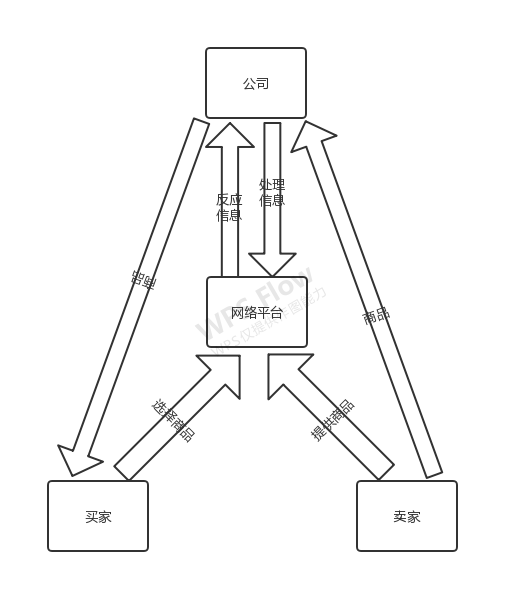

本项目基于大学生创业，用于大学生生活用品等物品交易，以及毕业生生活用品的转卖，为大学生之间的物品买卖提供交易平台确保交易的成功，有利于物品的有效利用和解决大学生的部分经济问题。

本创业计划的公司人员分为三类，首先是技术人员其责任为保证网络平台的安全和维持网站的稳定运行，其次是后勤保障人员确保卖家商品的运输及其安全，最后是管理人员进行人员的安排与调用以及对市场变化做出合理的判断。
介于湘潭大学没有系统的二手交易平台，学生进行交易难以正常进行，许多毕业生的可利用的生活用品以及其他物品被丢弃造成浪费，既然有着这么一个环境我们就好好利于，搭建一个专门的交易平台为想要买卖的同学提供这么一个平台，打破传统的丢弃，即能避免物品的浪费也可以为同学谋的利益。